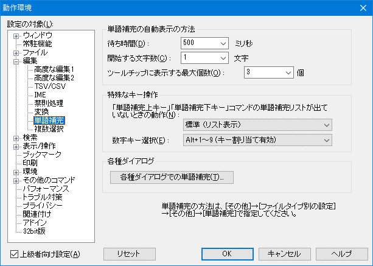
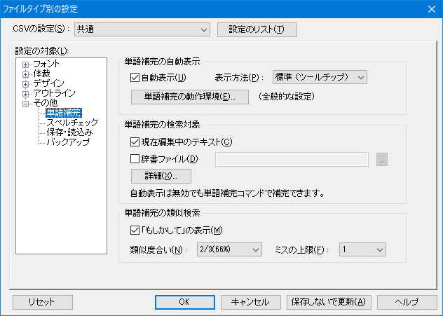

秀丸エディタ Ver.7.00以降では、「単語補完」が使用可能です。
「単語補完」は、入力された文字から始まる単語をリストアップする機能です。
補完の元となるデータは、
を指定できます。
追加の辞書として、
も指定可能です。
候補を表示する方法も複数用意されているので、好みで設定してください。
ツールチップ(標準)

リスト

リストはマウスでサイズを変更できます。
ステータスバーに表示
ステータスバーは、ステータスバー自体の表示領域が狭い場合、候補が見えない場合があります。
「単語補完」の設定は、
の2箇所あります。

本来、「単語補完上キー」、「単語補完下キー」は、リスト表示されている場合、選択を上下移動させるキー操作なので、 補完対象リストが表示されていない状態では無効になるはすですが、別途機能を割り当てることが出来ます。
標準 （リスト表示）
「リスト表示」と同じです。
リスト表示
設定が「リスト」以外でも、リスト表示を行います。
リストを非表示のまま選択
リストは表示されませんが、キーを押すたびに、候補リストの内容に切り替わります。
現在の内容の上下検索
設定にかかわらず、「現在の内容」から候補を検索します。
現在の内容の上下検索と他の候補
「現在の内容の上下検索」だけではなく、「ファイルタイプ別の設定」で「追加の対象」に設定された内容から、 候補を検索します。
タブキーの割り当て
タブキーと同じ動作にします。
数字キーによる候補の選択について設定します。
秀丸エディタで使用される各種ダイアログでも、単語補完を有効にするか設定します。

補完用データの検索先を指定します。
現在編集中のテキスト
編集中のファイルから補完内容を検索します。
辞書ファイル
指定された辞書ファイルから、補完内容を検索します。 ワイルドカードのアスタリクス“*”が使用できるので、“*.txt”とすれば、複数ファイルも対象にする事が可能ですが、 余計なファイルを読み込む場合もあります。(補完辞書ファイル専用フォルダを用意すると良いかもしれません。)
「詳細」ボタンで、詳細設定が出来ます。
また、「さらに」ボタンを押すと、「単語の種類」をカスタムにした場合の設定も可能です。
通常は、入力内容にマッチする候補のみ表示しますが、
☑「もしかして」の表示
をチェックしている場合は、マッチする候補がない場合は、入力内容に似た候補をリストアップします。 (入力をミスしていたり、あいまいな場合に有効です。)
ただし、3文字以上の文字が入力されている必要があります。
類似度合い
どの程度まで合っている候補を表示するかを設定します。
以下の設定から選択します。
66% では、最低の3文字の場合、2文字まで一致していれば、類似と判定します。
ミスの上限
「類似度合い」で類似度合いを指定できますが、それとは別に類似と判定するまでの判定回数の上限設定し、 その値以下のものを候補とします。
長い単語で「類似度合い」が少ない場合、類似判定に要する回数が多くなりますが、 「ミスの上限」の値が判定回数のリミットになります。
詳細については、 HMJRE.DLLのヘルプ-「類似検索の詳細」 を参照してください。
補完用辞書ファイルは、Shift_JISで記述する必要があります。(2017/07/10現在)
「辞書ファイルの種類」ですが、「フリーフォーマット」の場合は特に指定はなく、 通常の文書やテキストファイルから、柔軟に補完対象を検索します。
「行単位」の場合は、候補を1行毎に記述してください。 マッチした場合は、1行まるごと候補として表示されます。 (マッチ自体は、先頭一致だけではなく、行内の途中にもマッチします。)
初期状態では、日本語は対象ではありませんが、設定を変更して対象にする事も可能です。 ただ、IME(日本語入力ソフト)にも似たような機能があるので、日本語の場合はそちらを使った方が良いかもしません。